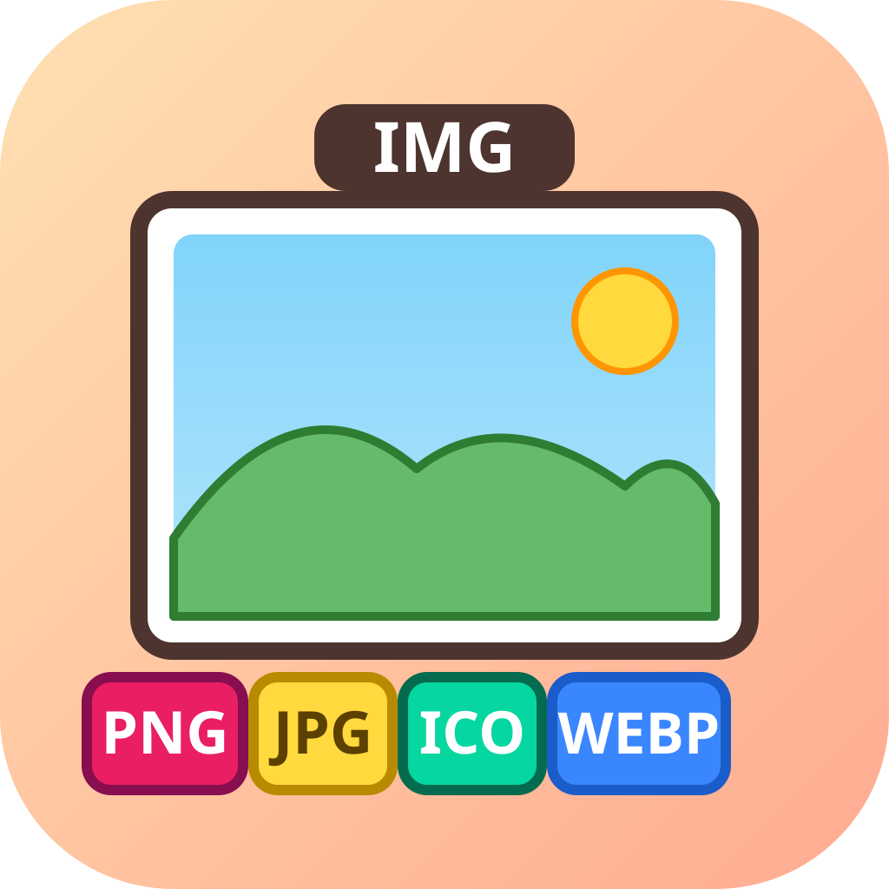
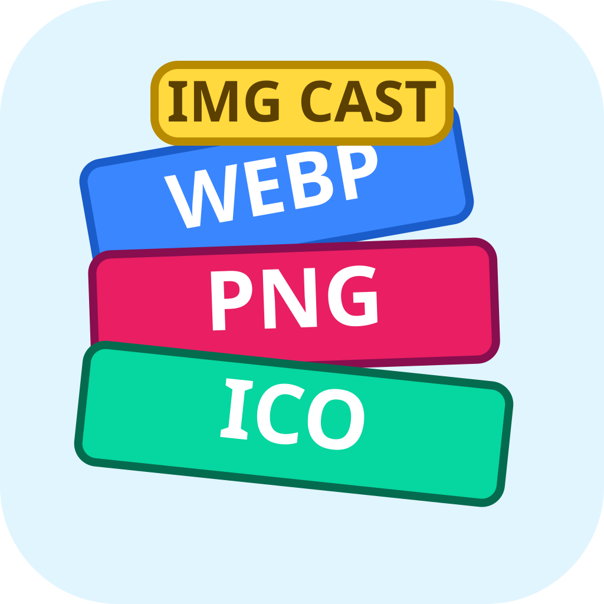
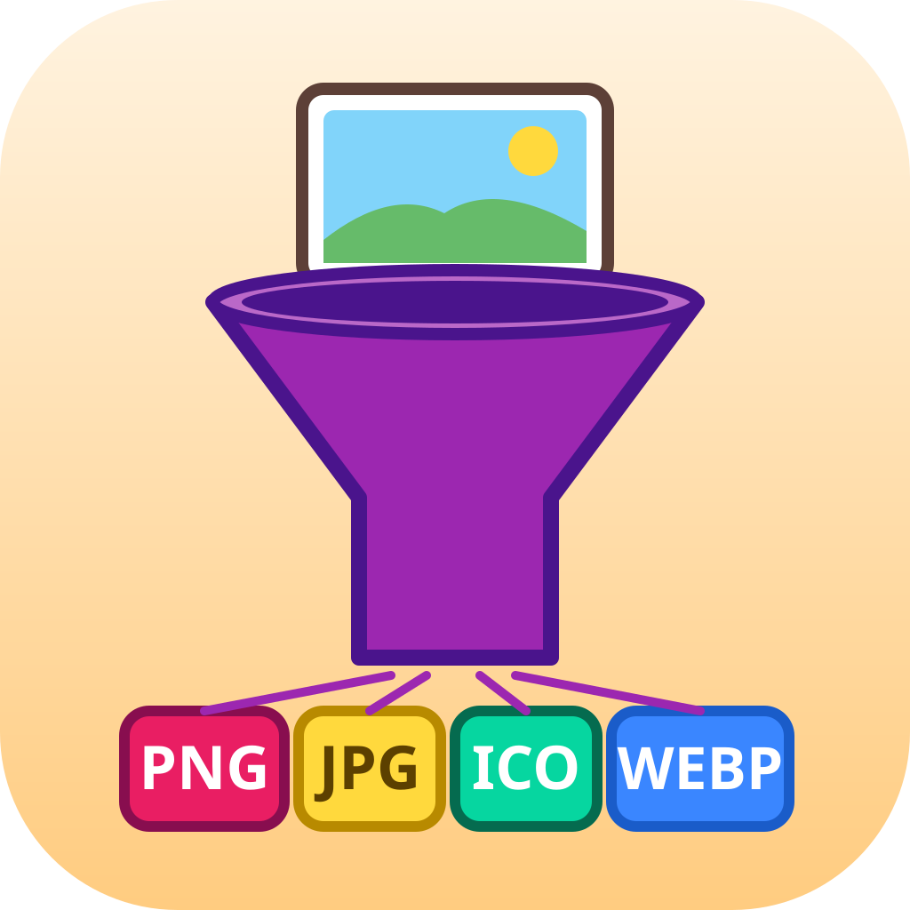
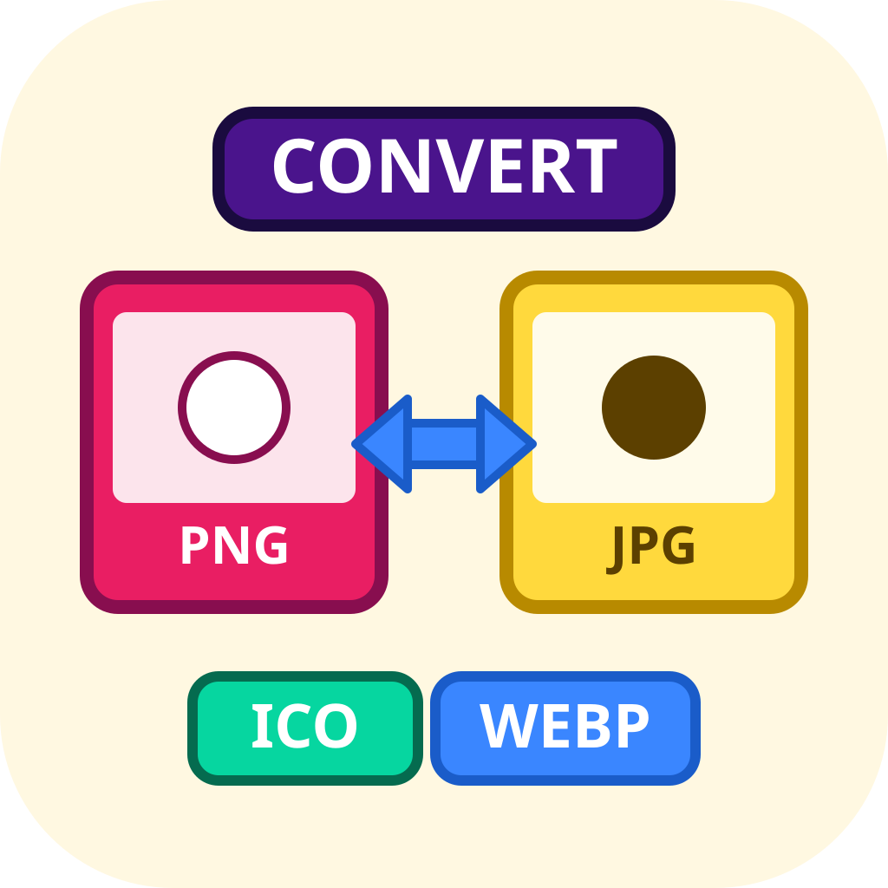
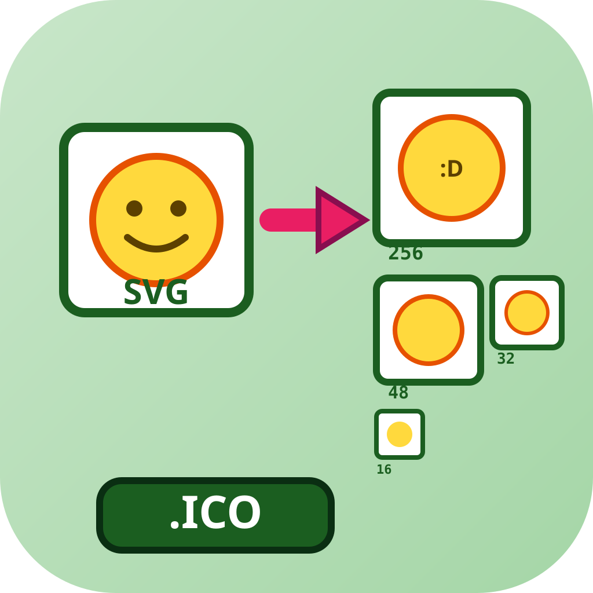
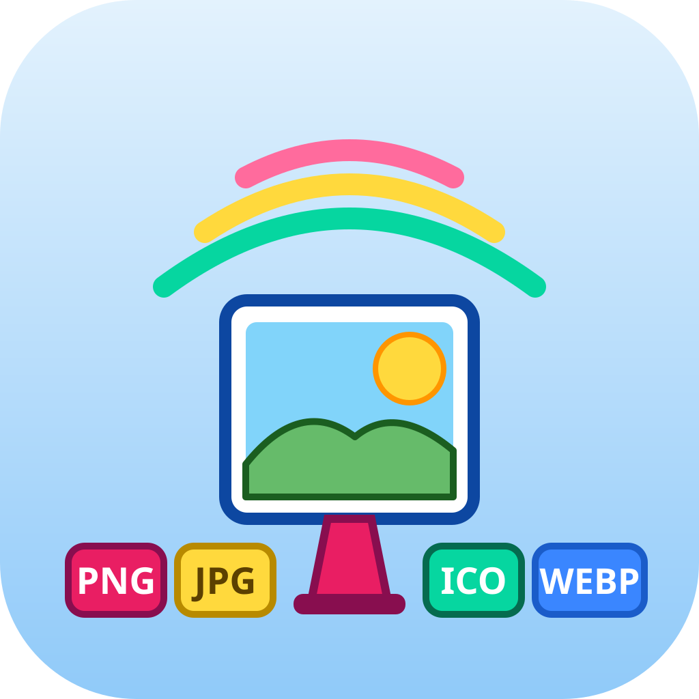
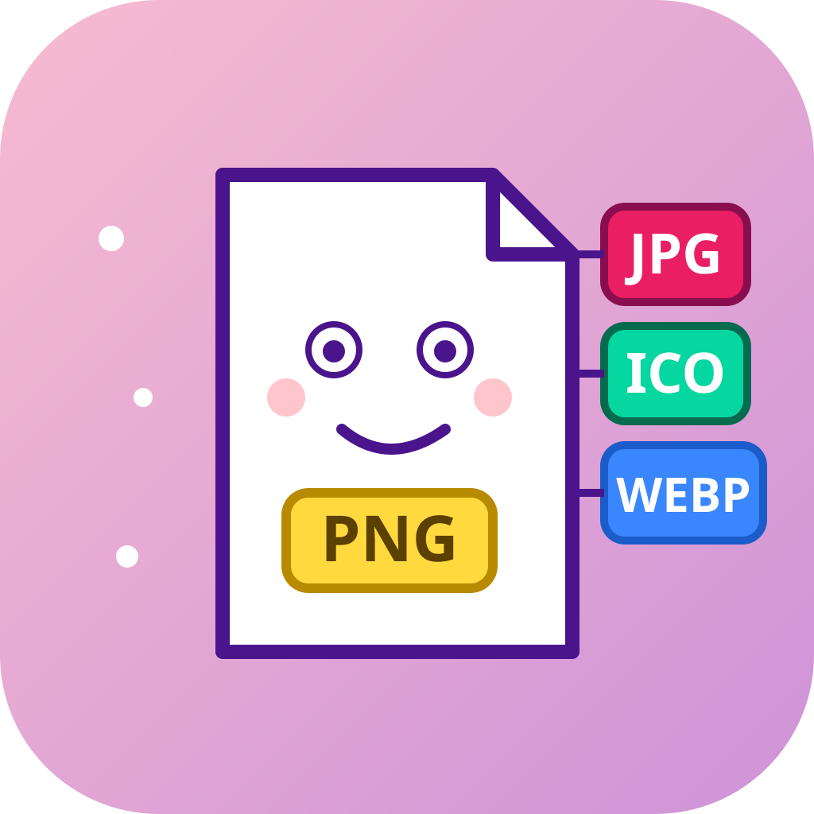
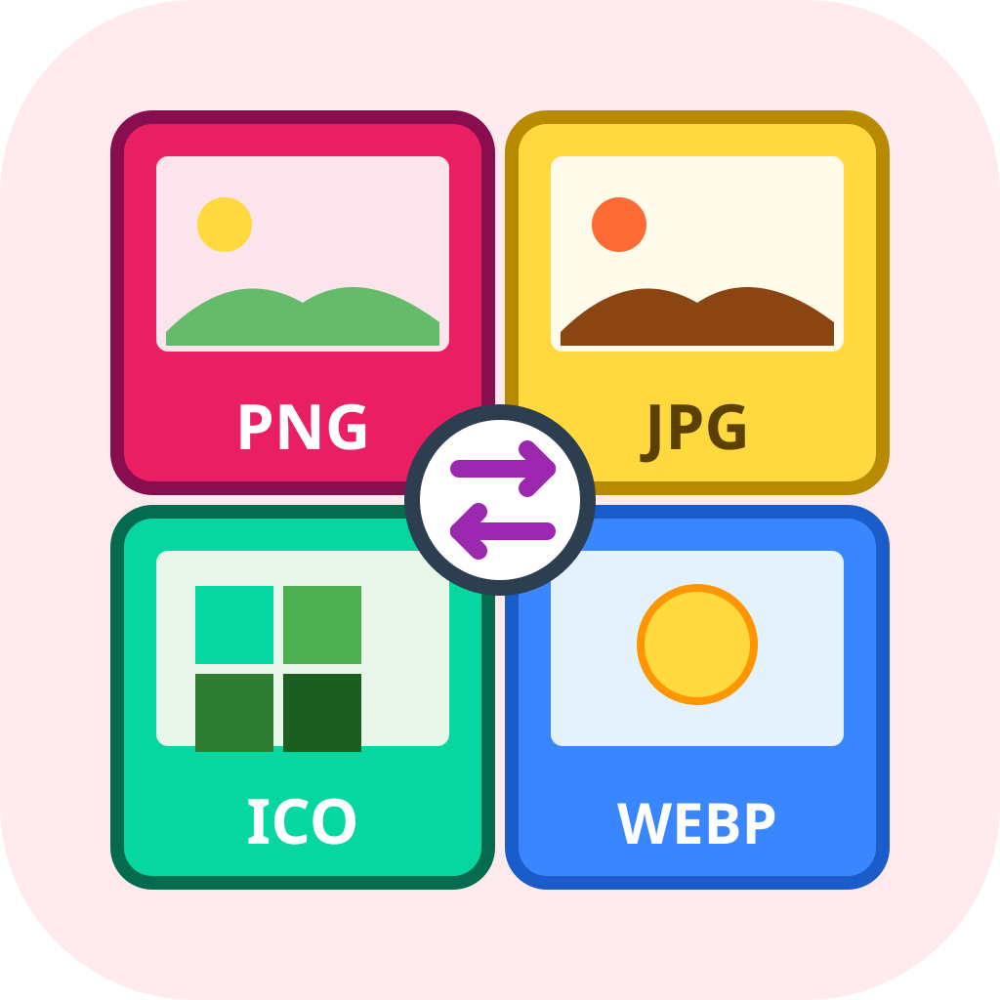

icon_01 · literal
사진 프레임 + 포맷 배지 / 중앙심볼

icon_02 · literal
포맷 카드 스택 (WEBP/PNG/ICO) / 레이어드

icon_03 · metaphor
깔때기 변환기 / 공간·장면

icon_04 · metaphor
PNG↔JPG 양방향 변환 / 기하학 추상

icon_05 · hybrid
SVG → ICO 멀티 사이즈 계단 / 중앙심볼

icon_06 · metaphor
방송 타워에서 포맷 "cast" / 대각선

icon_07 · metaphor
이미지 캐릭터가 옷(포맷)을 갈아입음 / 실루엣

icon_08 · metaphor
4분면 포맷 + 중앙 변환 심볼 / 기하학